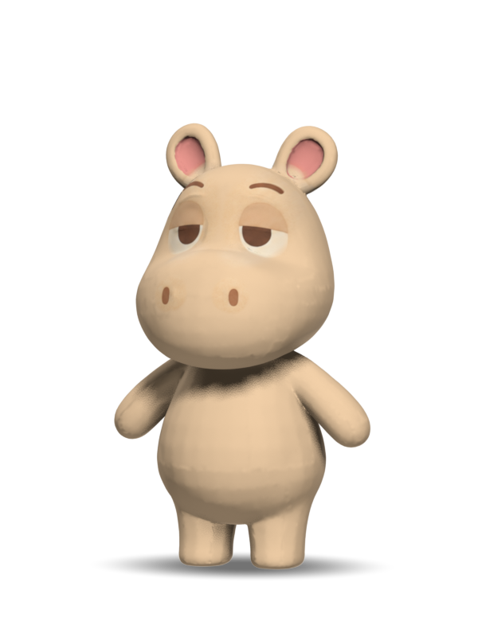
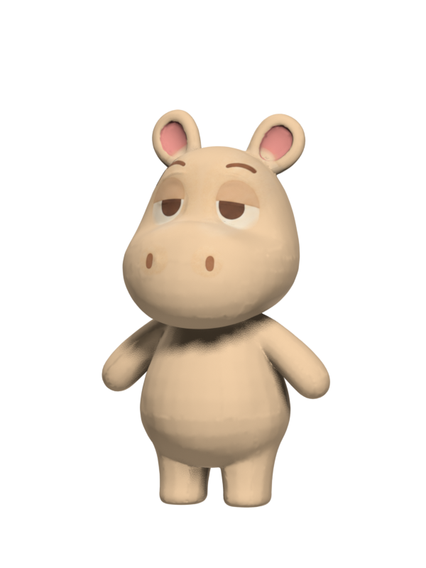

M2-B · 하루 한 장
‹ 유리병
목록으로
11월 10일 월요일
이날 너는 4가지를 해냈어
아침에 이불 갰다

보고서 초안 보냈다
퇴근길에 한 정거장 걸었다
★
일찍 잤다

‹ 11월 7일
11월 12일 ›
좌우로 넘기면 기록한 날만 한 장씩. 8·9·11일은 기록이 없어서 건너뛰어 (빈칸 없음).
M3 · ☆ 다시 보고 싶은 기록
‹ 유리병
☆ 다시 보고 싶은 기록
크기랑 상관없이, 다시 읽고 싶은 것만 모았어.
11월 10일 (월)
퇴근길에 한 정거장 걸었다
11월 3일 (월)
엄마한테 먼저 전화했다
10월 28일 (화)
처음으로 헬스장 등록
10월 21일 (화)
물 한 잔 마셨다
10월 19일 (일)
무서웠지만 발표 끝냈다
방
유리병
꾸미기
설정
'크게 보기'에서 ☆을 누르면 여기 모여. 씨앗·구슬은 똑같아. "물 한 잔"도 별 받을 수 있어.
M4 · 한 달 전 오늘 + 한 달 카드
나의 작은 승리 유리병
지금까지 구슬 37개. 구슬은 줄어들지 않아.
한 달 전 오늘
"처음으로 혼자 김치찌개 끓였다"
10월 13일 (월) · 단짝이 아직 기억하고 있어
10월의 나
10월에 너는 31가지를
해냈어
제일 자주 한 일
물 마시기 · 정리하기
10월에 처음 적은 일
"처음으로 헬스장 등록"
다시 해낸 일
"산책 30분" 4번
카드로 저장하기
원문은 그대로 두고 위에 카드만 덧붙여. 지난달과 비교하는 숫자는 없어. 12월엔 같은 방식으로 '올해의 유리병'.